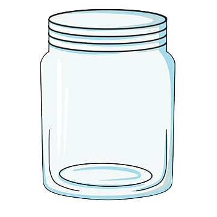

<!DOCTYPE html>
<html>
  <head>
    <meta charset="UTF-8">
    <title>Acquisition Experiment</title>
    <script src="./jsPsych/jspsych.js"></script>
    <script src="./jsPsych/plugin-html-slider-response.js"></script>
    <script src="./jsPsych/plugin-html-button-response.js"></script>
    <link href="./jsPsych/jspsych.css" rel="stylesheet" />

    <style>
      /* ===== Global layout ===== */
      body { font-family: sans-serif; }
      .jspsych-html-slider-response-container { width: 100%!important; max-width: 550px; margin: auto; }
      .jspsych-html-slider-response-stimulus { text-align: center; max-width: 520px; margin: 0 auto 15px; }

      /* ===== Feeling scale ===== */
      .feeling-scale {
        width: 100%;
        max-width: 600px;
        height: auto;
        margin: 0 auto 5px;
        display: block;
      }

      /* ===== Slider labels ===== */
      .slider-labels-custom { display: flex; justify-content: space-between; width: 100%; font-weight: bold; margin-top: 8px; }

      .intro-screen {
        max-width: 520px;
        margin: 0 auto;
      }

      .jspsych-slider {
        width: 100% !important;
      }
      .jspsych-html-slider-response-stimulus {
        max-width: 700px;
        margin: 0 auto 20px auto;
        text-align: center;
      }

      .jspsych-content-wrapper {
        display: flex;
        flex-direction: column;
        align-items: center;
        width: 100%;
      }

      .jspsych-content {
        width: 100%;
        max-width: 800px;
        margin: 0 auto;
      }

      .slider-labels {
        display: flex;
        justify-content: space-between;
        width: 100%;
        margin-top: 10px;
        font-weight: bold;
      }

      .intro-screen .jspsych-html-slider-response-container {
        visibility: hidden;
        height: 1px;
      }

      .custom-button {
        display: block;
        margin: 20px auto;
        padding: 10px 20px;
        background-color: #4CAF50;
        color: white;
        border: none;
        border-radius: 4px;
        font-size: 16px;
        cursor: pointer;
      }

      .custom-button:hover {
        background-color: #45a049;
      }

      .visual-container {
        position: relative;
        width: 150px;
        height: 200px;
        margin: 0 auto 20px;
      }

      .prompt-container {
        margin-top: 250px;
        margin-bottom: 0px;
      }

      .cookie-stack {
        position: absolute;
        bottom: 40px;
        left: 30px;
        width: 100%;
        z-index: 2;
        display: grid;
        grid-template-columns: 1fr 1fr;
        column-gap: 0px;
        row-gap: 4px;
        justify-items: center;
        font-size: 30px;
        pointer-events: none;
        box-sizing: border-box;
        width: 60%;
      }

      .cookie-stack.tall-gap {
        row-gap: 20px;
        font-size: 40px;
      }

      .cookie-stack span {
        width: 60%;
        text-align: center;
        line-height: 1.2;
      }

      .cookie-stack.tall-gap span {
        min-height: 40px;
      }

      .jar-image {
        position: absolute;
        top: 0;
        left: 0;
        width: 100%;
        height: 100%;
        z-index: 1;
        pointer-events: none;
      }
      .comprehension-check {
        text-align: left;
        max-width: 600px;
        margin: 0 auto;
      }

      .question {
        margin-bottom: 20px;
      }

      .options {
        margin-left: 20px;
      }

      .option {
        margin-bottom: 8px;
      }

      input[type="radio"] {
        margin-right: 10px;
      }

      label {
        font-size: 15px;
      }

      .slider-labels-custom {
        display: flex;
        justify-content: space-between;
        width: 100%;
        font-weight: bold;
        margin-top: 8px;
      }
    </style>
  </head>
  <body>
    <script>
      document.addEventListener('DOMContentLoaded', function() {
        const jsPsych = initJsPsych({
          on_finish: function() {
            jsPsych.data.displayData();
          }
        });

        const categories = {
          food: {
            stimuli: [
              {
                label: "Cookie 🍪",
                need: "X wants to have 8 cookies.",
                base_action: "cookie",
                unit: "cookies",
                emoji: "🍪"
              },
              {
                label: "Ice cream 🍦",
                need: "X wants to have 8 ice creams.",
                base_action: "ice cream",
                unit: "ice creams",
                emoji: "🍦"
              },
              {
                label: "Soda 🥤",
                need: "X wants to have 8 cans of soda.",
                base_action: "can of soda",
                unit: "cans of soda",
                emoji: "🥤"
              },
              {
                label: "Candy 🍬",
                need: "X wants to have 8 candies.",
                base_action: "candy",
                unit: "candies",
                emoji: "🍬"
              },
              {
                label: "Hot chicken legs 🍗",
                need: "X wants to have 8 hot chicken legs.",
                base_action: "hot chicken leg",
                unit: "hot chicken legs",
                emoji: "🍗"
              },
              {
                label: "Healthy fruits 🍊",
                need: "X wants to have 8 healthy fruits.",
                base_action: "healthy fruit",
                unit: "healthy fruits",
                emoji: "🍊"
              }
            ]
          },
          sensory: {
            stimuli: [
              {
                label: "Light 💡",
                need: "X wants to have 4 light bulbs turned on.",
                base_action: "light bulb",
                unit: "light bulbs",
                emoji: "💡"
              },
              {
                label: "Sound 🔊",
                need: "X wants to have 4 speakers.",
                base_action: "speaker",
                unit: "speakers",
                emoji: "🔊"
              },
              {
                label: "Temperature ♨️",
                need: "X wants to have 4 heaters.",
                base_action: "heater",
                unit: "heaters",
                emoji: "♨️"
              },
              {
                label: "Scent 🧴",
                need: "X wants 4 bottles of perfume.",
                base_action: "bottle of perfume",
                unit: "bottles of perfume",
                emoji: "🧴"
              },
              {
                label: "Taste 🧂",
                need: "X wants to have 4 bottles of salt.",
                base_action: "bottle of salt",
                unit: "bottles of salt",
                emoji: "🧂"
              }
            ]
          },
          entertainment: {
            stimuli: [
              {
                label: "Gaming 🎮",
                need: "X wants to have 4 games in his game library.",
                base_action: "game",
                unit: "games",
                emoji: "🎮"
              },
              {
                label: "Watching TV 📺",
                need: "X wants to have 4 TV in her house.",
                base_action: "Television",
                unit: "Televisions",
                emoji: "📺"
              },
              {
                label: "Scrolling Social Media 📱",
                need: "X wants to have 4 phones.",
                base_action: "phone",
                unit: "phones",
                emoji: "📱"
              },
              {
                label: "Reading 📖",
                need: "X wants to have 4 books.",
                base_action: "book",
                unit: "books",
                emoji: "📖"
              },
              {
                label: "Drawing 🎨",
                need: "X wants to have 4 paintbrushes.",
                base_action: "paintbrush",
                unit: "paintbrushes",
                emoji: "🎨"
              }
            ]
          }
        };

        /* ================= INTRO ================= */
        const intro = {
          type: jsPsychHtmlButtonResponse,
          stimulus: `
            <div class="intro-screen">
              <h2>Welcome to the Experiment!</h2>
              <p>In this study, you will read short descriptions about a character who receives something they want — like food, light, and so on.</p>
              <p>Your job is to imagine how the character's feeling changes after getting different amounts of that thing.</p>
              <p>For each situation, you’ll move a slider to rate how much better or worse the character feels. This slider is not an objective rating of happiness, but instead represents the change in the character's feeling after receiving the item.</p>
              <p>The study takes about 10–20 minutes.</p>
              <p>Click “Continue” to begin a short tutorial.</p>
            </div>`,
          choices: ['Continue']
        };

        /* ================= TUTORIAL ================= */
        const tutorialItems = [
          // demo pages
          { html: `<p>People perform various activities, and their feelings may change after each one.<br>Your job is to use the feeling‑change slider below to rate how her feelings change after the activity.</p>`, pos: 50 },
          { html: `<p>When someone feels <b>much worse</b> than before, the slider should be on the <b>far left</b>.</p>`, pos: 0 },
          { html: `<p>When someone feels <b>a bit worse</b> than before, the slider should be <b>somewhat to the left</b>.</p>`, pos: 25 },
          { html: `<p>When someone's feeling <b>doesn't change</b>, the slider should be in the <b>middle</b>.</p>`, pos: 50 },
          { html: `<p>When someone feels <b>a bit better</b> than before, the slider should be <b>somewhat to the right</b>.</p>`, pos: 75 },
          { html: `<p>When someone feels <b>much better</b> than before, the slider should be on the <b>far right</b>.</p>`, pos: 100 },
          // video demonstration pages
          { html: `<p>When someone performs an activity that makes them feel <b>much worse than before</b>, their feeling‑change slider goes all the way to the left.</p><video src="videos/much_worse.mov" width="480" controls muted></video>`, noSlider: true },
          { html: `<p>When someone performs an activity that makes them feel <b>much better than before</b>, their feeling‑change slider goes all the way to the right.</p><video src="videos/much_better.mov" width="480" controls muted></video>`, noSlider: true },
          // comprehension check items
          { text: 'much worse', value: 0, feedback: 'Wrong. “Much worse” goes on the far left.' },
          { text: 'a little worse', value: 25, feedback: 'Wrong. “A little worse” is somewhat left of center.' },
          { text: 'no change', value: 50, feedback: 'Wrong. “No change” is in the center.' },
          { text: 'a little better', value: 75, feedback: 'Wrong. “A little better” is somewhat right of center.' },
          { text: 'much better', value: 100, feedback: 'Wrong. “Much better” goes on the far right.' }
        ];

        const tutorial = tutorialItems.map((item, idx) => {
          if (item.noSlider) {
            return {
              type: jsPsychHtmlButtonResponse,
              stimulus: item.html,
              choices: ['Continue'],
              data: { tutorial_page: idx + 1 }
            };
          }
          if (item.html) {
            return {
              type: jsPsychHtmlSliderResponse,
              stimulus: item.html + ``,
              labels: ["Much worse", "A little worse", "No change", "A little better", "Much better"],
              min: 0, max: 100,
              slider_start: item.pos,
              require_movement: false,
              data: { tutorial_page: idx + 1 }
            };
          }
          // comprehension check
          return {
            type: jsPsychHtmlSliderResponse,
            stimulus: `<p>If X feels <b>${item.text}</b> than before, where should the slider go?</p>` +
              ``,
            labels: ["Much worse", "A little worse", "No change", "A little better", "Much better"],
            min: 0, max: 100,
            slider_start: 50,
            require_movement: true,
            data: { tutorial_page: idx + 1 },
            on_finish: function(data) {
              const correct = Math.abs(data.response - item.value) <= 20;
              data.correct = correct;
            }
          };
        });

        // feedback pages for wrong responses
        const feedbacks = tutorialItems.map((item, idx) => ({
          timeline: [{
            type: jsPsychHtmlSliderResponse,
            stimulus: `<p style="color:red;"><b>Wrong.</b></p>
              <p>If someone feels <b>${item.text}</b> than before, the slider should be <b>${
                item.value === 0 ? 'on the far left'
                  : item.value === 100 ? 'on the far right'
                  : item.value === 50 ? 'in the middle'
                  : item.value < 50 ? 'somewhat to the left'
                  : 'somewhat to the right'
              }</b>.</p>` +
              ``,
            labels: ["Much worse", "A little worse", "No change", "A little better", "Much better"],
            min: 0,
            max: 100,
            slider_start: item.value,
            require_movement: false,
          }],
          conditional_function: function() {
            const last = jsPsych.data.get().last(1).values()[0];
            return !last.correct;
          }
        }));

        // merge tutorial and feedbacks into one sequence
        const tutorialSequence = [];
        tutorial.forEach((trial, i) => {
          tutorialSequence.push(trial);
          if (!tutorialItems[i].noSlider && !tutorialItems[i].html) {
            tutorialSequence.push(feedbacks[i]);
          }
        });

        function buildVisualHTML(amount, emoji, isExtraGap) {
          if (!emoji) return "";
          return `
            <div class="visual-container">
              <div class="cookie-stack ${isExtraGap ? 'tall-gap' : ''}">
                ${Array(amount).fill(`<span>${emoji}</span>`).join('')}
              </div>
              
            </div>`;
        }

        function attentionCheck(direction, emoji, total, need, cat) {
          const visual = buildVisualHTML(total, emoji, cat);
          const txt = direction === 'right'
          ? "Please drag the slider all the way to the RIGHT."
          : "Please drag the slider all the way to the LEFT.";
        return {
          type: jsPsychHtmlSliderResponse,
          stimulus: visual + `<p>${need}</p><p>${txt}</p>` +
              ``,
          labels: ["Much worse","A little worse","No change","A little better","Much better"],
          min: 0, max: 100, slider_start: 50, require_movement: true,
          data: { attention_check: true, correct_direction: direction },
          on_finish: d => { d.correct = (direction === 'right' ? d.response === 100 : d.response === 0); }
        };
        }

        function buildSliderTrial({ visual, need, description, catKey, label, amount, trialNumber }) {
          return {
            type: jsPsychHtmlSliderResponse,
            stimulus:
              `
              <div class="prompt-container">
                ${visual}
                <p>${need}</p>
                <p>${description}</p>
              </div>
            ` +  ``,
            labels: ["Much worse", "A little worse", "No change", "A little better", "Much better"],
            min: 0,
            max: 100,
            slider_start: 50,
            require_movement: true,
            data: {
              category: catKey,
              stimulus_label: label,
              trial_number: trialNumber,
              amount: amount
            }
          };
        }
        
        //const timeline = [intro, ...tutorialSequence];
        const timeline = [intro];

        for (const [catKey, catData] of Object.entries(categories)) {
          const stimulus = jsPsych.randomization.sampleWithoutReplacement(catData.stimuli, 1)[0];
          const increment = (catKey === "food") ? 2 : 1;
          const isExtraGapCategory = !(catKey === "food");

          // counter for alternating attention-check directions
          let attentionIndex = 0;
          // random attention check position for this category (1-10)
          const attentionPos = Math.floor(Math.random() * 10) + 1;

          for (let i = 0; i < 10; i++) {
            const amount = increment * (i + 1);
            const amountStr = amount === 1 ? `1 ${stimulus.base_action}` : `${amount} ${stimulus.unit}`;

            const description = i === 0
              ? `X obtained ${amountStr} and stored ${amount === 1 ? 'it' : 'them'} in a box. How does X's feeling change?`
              : `X obtained ${increment} more ${increment === 1 ? stimulus.base_action : stimulus.unit} and stored ${increment === 1 ? 'it' : 'them'}. Now she has ${amountStr}. How does X's feeling change?`;

            const visual = buildVisualHTML(amount, stimulus.emoji, isExtraGapCategory);

            timeline.push(
              buildSliderTrial({
                visual,
                need: stimulus.need,
                description,
                catKey,
                label: stimulus.label,
                amount,
                trialNumber: i + 1
              })
            );
            // Insert attention check randomly in this category
            if (i + 1 === attentionPos) {
              const dir = (attentionIndex % 2 === 0) ? 'left' : 'right'; attentionIndex++;
              timeline.push(attentionCheck(dir, stimulus.emoji, amount, stimulus.need, catKey));
            }
          }

          //100 + n trial
          const lastAmount = increment * 10;
          const bonusAmount = 100 + lastAmount;
          const bonusAmountStr = `${bonusAmount} ${stimulus.unit}`;
          const bonusVisual = buildVisualHTML(bonusAmount, stimulus.emoji, isExtraGapCategory);
          const bonusDescription = `X obtained ${bonusAmountStr}. How does X's feeling change?`;

          timeline.push(
            buildSliderTrial({
              visual: bonusVisual,
              need: stimulus.need,
              description: bonusDescription,
              catKey,
              label: stimulus.label,
              amount: bonusAmount,
              trialNumber: 11
            })
          );
        }

        jsPsych.run(timeline);
      });
    </script>
  </body